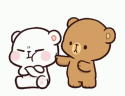
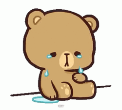

WILL YOU PLEASE FORGIVE ME?

I'LL MAKE IT UP TO YOU. ♡

click the heart to read my letter ♡
First things first, I'm sorry for what I did earlier, for being that way to you. Somehow, I don't feel like words are enough. So, I'll do it in a way I know I can put much effort to and something I know I do best.
Do you want me to tell you a story?
A story of how a guy who learned not to give a fvck about anything else before, and was even called masungit, madalas wala sa mood, always nang i-ignore sa chats, doesn't care about relationships, and many more, turned into the guy you have right now.
Before you came into my life, I was so used to keeping things to myself. I was comfortable being independent, keeping my weakness hidde, my stories hidden, and pretending that I didn't need anyone to understand me.
Then you came along.
And somehow, without even realizing it, I started letting you see the parts of me that I usually keep hidden from anyone. I started to show vulnerability that I promised myself now to show to anyone because I'm afraid they might use it against me. I become comfortable telling you things I wouldn't normally say to anyone. I started trusting you with the parts of myself that I was afraid someone might not understand.
I don't think you realize how special that is to me. To have someone I can lean on anytime. To have shoulder I can cry on every time I can't take it anymore. You might not realize it, but you really are so special to me.
It's not only the big things about you that I love. It's the little things too. The things you probably don't even notice about yourself. The way you talk, the way you smile, the way you call my name every time, the way you look into my eyes, the way you accept every part of me, the little things you do when you're being adorable without even trying. The things you tell me about yourself that somehow stay in my mind long after our conversations end.
Sometimes I catch myself remembering something you said hours ago, replaying a conversation in my head, or thinking about something you like just because it reminded me of you.
And then there's the way I see you.
There may be days when you look at yourself and think you look tired, messy, or haggard. But somehow, when I look at you, I still see the same girl who makes my heart feel a little lighter just by being there.
You don't have to look perfect for me to think you're beautiful.
You just have to be you.
Sometimes I wonder how strange life is.
Out of all the people I could have met, all the places I could have been, and all the different paths my life could have taken, somehow mine crossed with yours.
Maybe that's why I like the Idea of the red string of fate.
Maybe somewhere along the way, our strings got tangled. Maybe we wandered through years of our lives without knowing where the other person was. And then, somehow, we found each other.
I don't know if fate is real.
But I know I'm grateful that whatever path brought me to you did.
And if there really are other lives after this one, if we're given another chance to exist somewhere else, as different people in a different time...
I hope I find you again.
Maybe I won't remember this life. Maybe you won't remember me either.
Maybe we'll meet as strangers.
But I'd still want to find you.
I'd want to sit beside you again, listen to you talk again, learn all your little habits again, and slowly fall in love with you all over again.
Because if I had another lifetime to live, I wouldn't want a life where I never met you.
I'd want another chance to find you.
Another chance to choose you.
Another chance to love you.
And for this lifetime, I want you to know something simple:
I'm really glad I found you.
I don't know what the future will look like, and I can't promise that everything will always be easy. But I can promise that what I feel for you is something I don't take lightly.
So if you ever doubt how much you mean to me, I hope you remember this letter.
Remember that somewhere in this world, there is someone who notices the little things about you.
Someone who remembers the things you say.
Someone who thinks you're beautiful even when you don't.
Someone who became softer because of you.
Someone who, out of all the lives he could have lived, is just grateful that one of them happened to lead him to you.
And if I ever get another life after this one...
I'll find you there too.
Always.
I know this was supposed to be an apology letter, but I suddenly can't stop myself writing those words, typing these things that I feel, feeling so emotional.
And can you imagine it if I tell you that while typing all these things up, my tears are slowly falling down, and I can't even stop it.
It might seem weird cause this thing is new to me, but I know this will be the person I am forever.
Once again, I'm really really sorry for what I did earlier.
I messed up...
But I hope reading this letter could somehow make it up to you even just a little.
I'm trying my best to be the best partner for you, because I want to prove not only to you, but to everyone who cares about you that you are being kept by a man who really appreciate you and will truly love you no matter what happens.
I'm so in love with you, maybe that's the reason why I feel so vulnerable but also safe around you.
I feel like I can cry at any moment when with you, without even thinking about something like you might judge me.
I might not say it too often, but I really really love you, My Wifee.
So please, don't get tired on me.
Please help me be the best partner for you.
Please tell me if I did something that hurts you.
Tell me if I did something wrong, confront me, get mad at me, or anything else. Just don't ever think of leaving me, because just the thought of you leaving makes my heart aches so much.
I might overthink a lot, I might apologize a lot, I might be too annoying at times, I might not be the best right now, but I promise you, I will always give you my best.
So please, stay until I succeeded on doing that. Please stay until I reach my final goal. There is nothing else I want more than to have you by my side through every challenges I face.
Please never get tired of loving me.
If you accept this letter, this apology. there is one more question, or one more thing I would like to ask you, If you don't mind.
Just click the button to move on.
♡